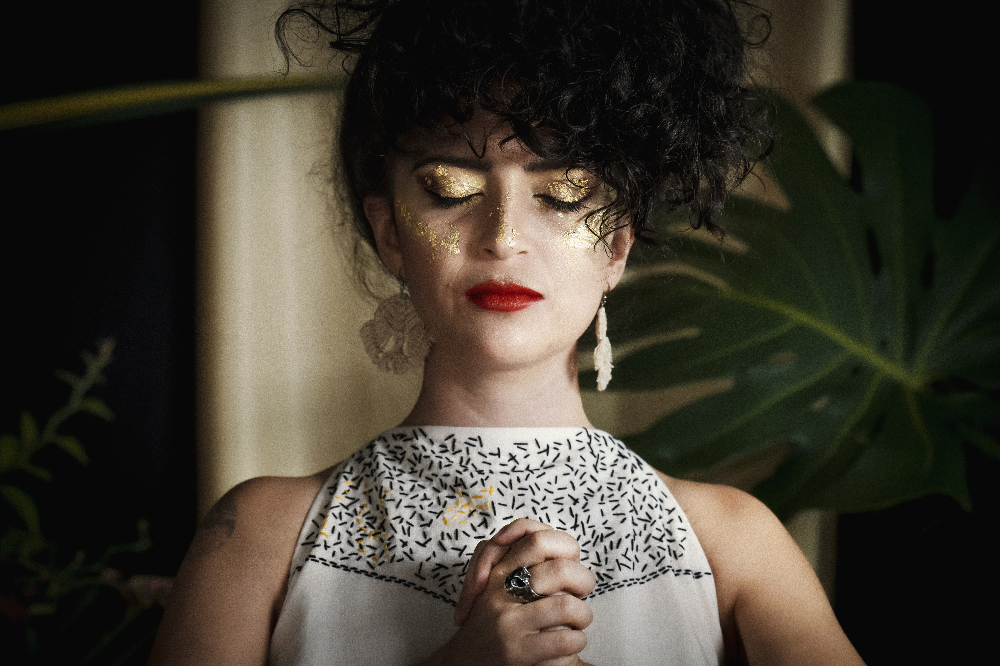
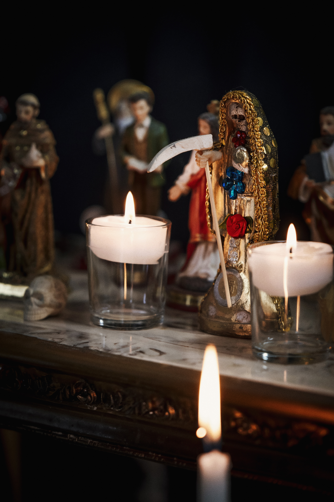
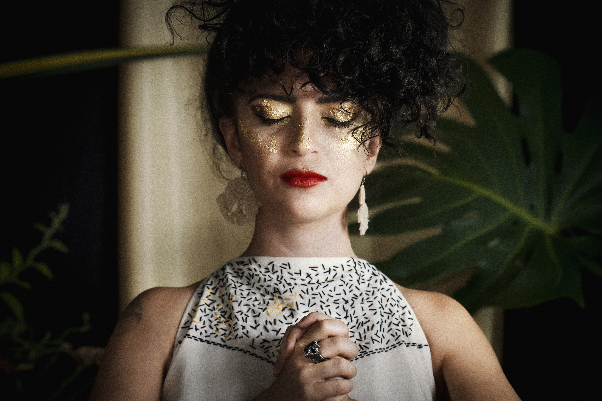
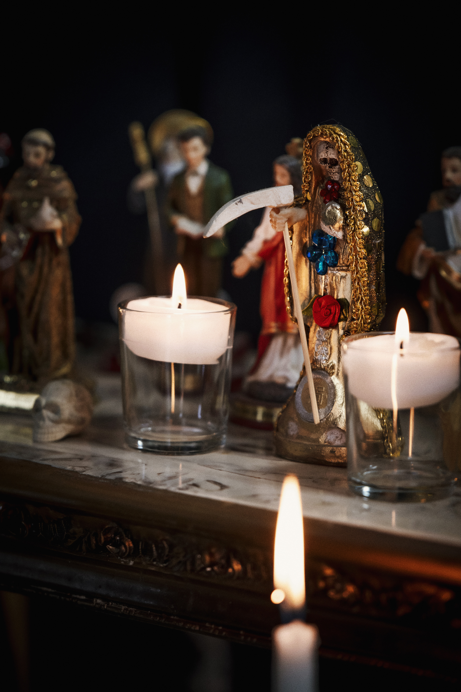

Soy Jacky Alvarado Lobo, diseñadora textil y técnica en alta costura. Desde que recuerdo he amado el olor al aceite de las máquinas de coser, el sonido de cada puntada y la mágica transformación de un pedazo de tela plano a una prenda que pueda ponerse en un cuerpo. Me parece fascinante la evolución que ha tenido el vestido a lo largo de la historia y la multiplicidad de mensajes que pueden transmitir. Siempre me ha interesado mucho la biología, los árboles y sus interacciones en el bosque, tan secretas como milagrosas. Estudié por algunos años turismo ecológico y fue ahí en donde descubrí la dendrología y conocí al Ceibo Barrigón, árbol que inspira el nombre e imagen de la marca. Bombacacea es la familia de árboles en los que en el momento de mis estudios estaba ubicado el ceibo. En el año 2015 entré al Núcleo Textil de INA y estudié por cuatro años patronaje y confección de prendas de alta costura. A partir de esa experiencia tuve las herramientas para conceptualizar una idea de marca y emprender el camino de la ropa heredable. Ahora estudio el énfasis de Textiles en la escuela de Arte y Comunicación Visual de la UNA. Vengo de una familia en donde los hilos y las agujas eran las herramientas primarias para el sustento de cada día y pude experimentar el poco valor que se le daba al trabajo de mi papá, de mis tías y mis abuelas. Desde que aprendí a coser llevo como premisa hacer valer mi trabajo, respetar los materiales y con el dignificar el oficio de la costurería. Así, cada vez que me dispongo frente a mi Juki DDL-555 estoy consciente de la oportunidad que tengo que reivindicar el valor del oficio. ¡Que a punta de puntadas, mi hilo te embellezca!
Tienda
habilitada proximamente...
 


